Welcome to Shallowbrook Acres, a family-run farm in Clarke County, Virginia, dedicated to producing high-quality, all-natural products. We believe in sustainable farming, ethical practices, and bringing the freshest products directly to our local community. Our mission is to provide locally sourced meats, handcrafted skincare, and artisan candles that are both natural and sustainable.
Our Products
Farm-Fresh Meats
Our high-quality meats are raised with care, ensuring the best flavor and nutrition for your family.
Our handcrafted balms and creams are made with pure beef tallow, perfect for nourishing skin.
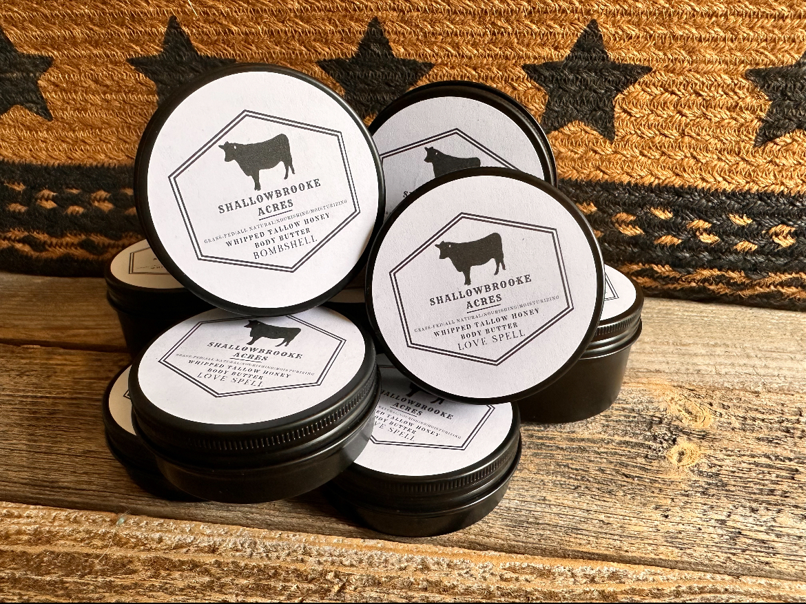
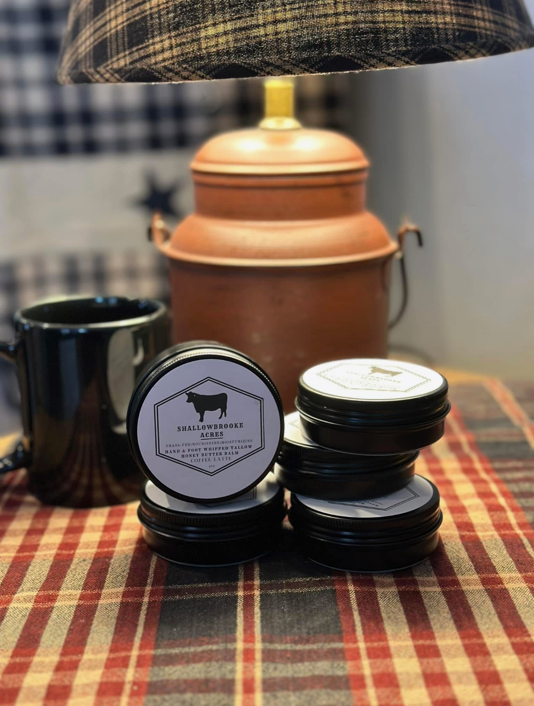
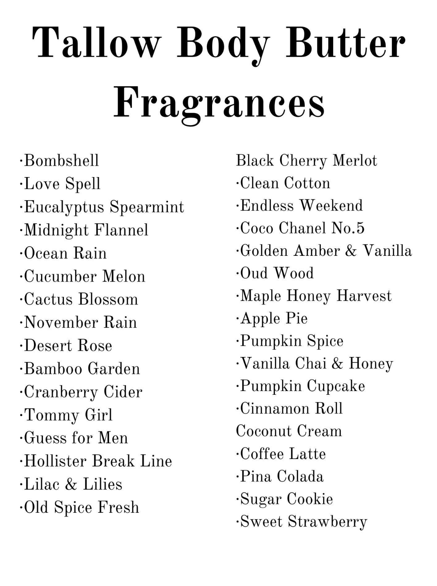
Tallow Candles
Enjoy our long-lasting tallow candles, naturally scented and crafted for a warm, cozy ambiance.
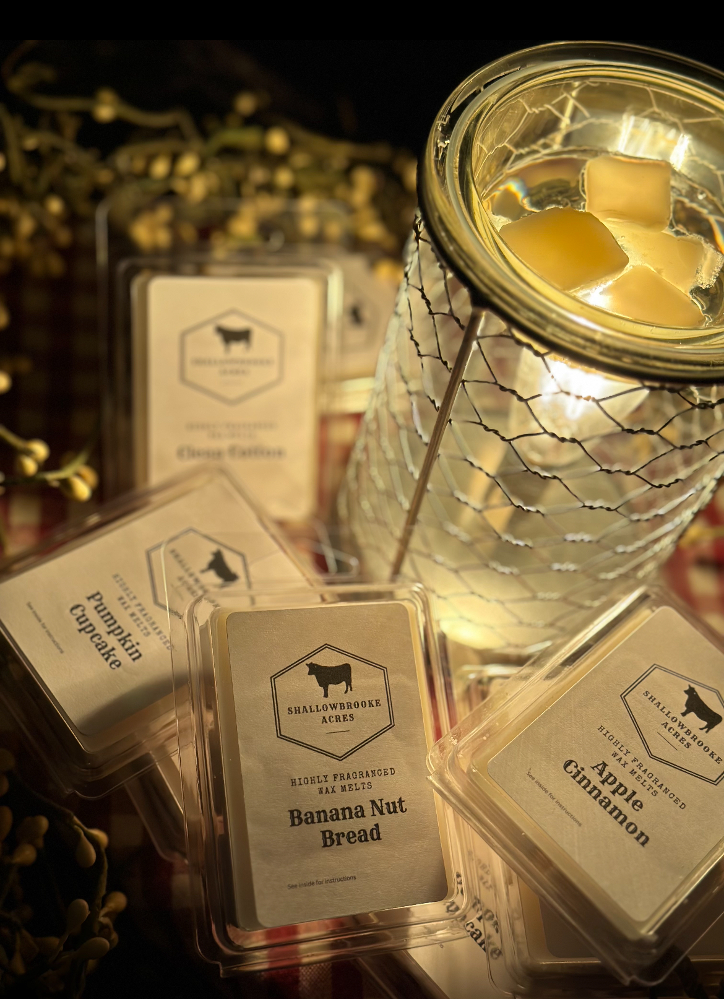
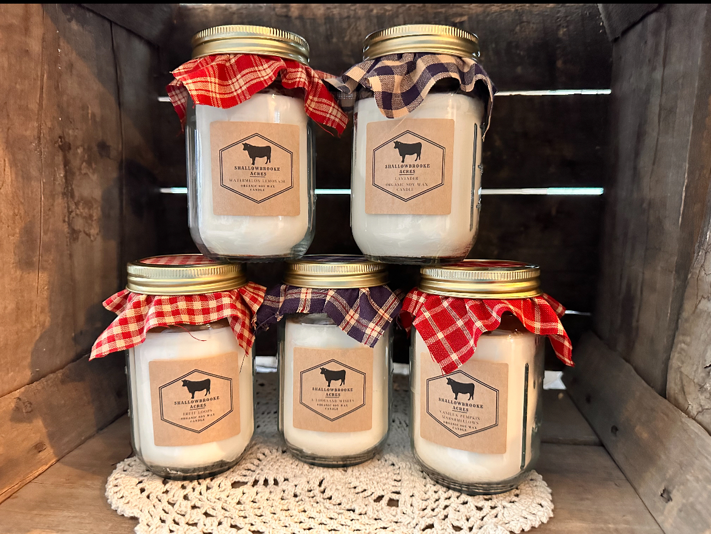
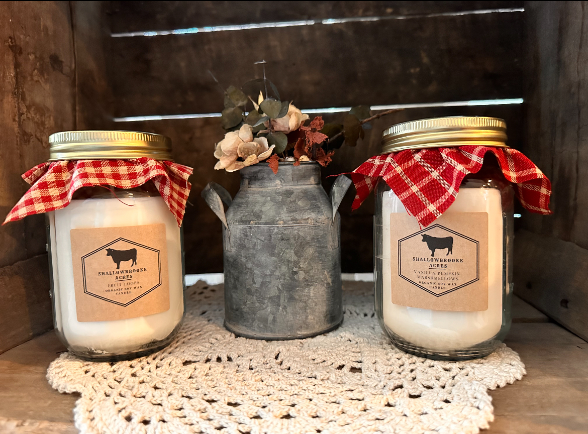
Homemade Apple Butter
Our Homemade Apple Butter is made from the finest, locally sourced apples, slow-cooked to perfection with a blend of warm spices. This rich, smooth spread is a true costumer favorite.
Where to Find Us
Eat LoCo Farmers Market
Date: March 30, 2025
Location: One Loudoun Farmers Market
Spring Farm Festival
Date: May 5, 2025
Location: Berryville Town Park
Updates
Stay up to date with the latest farm updates, seasonal products, and community events.


 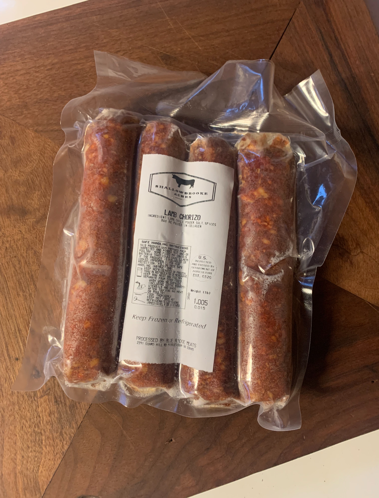
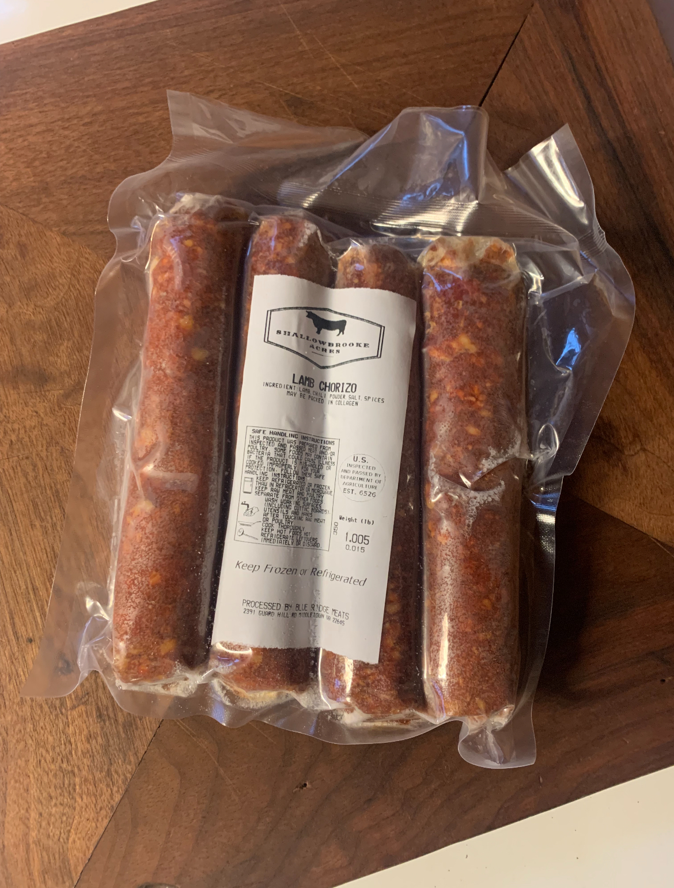

 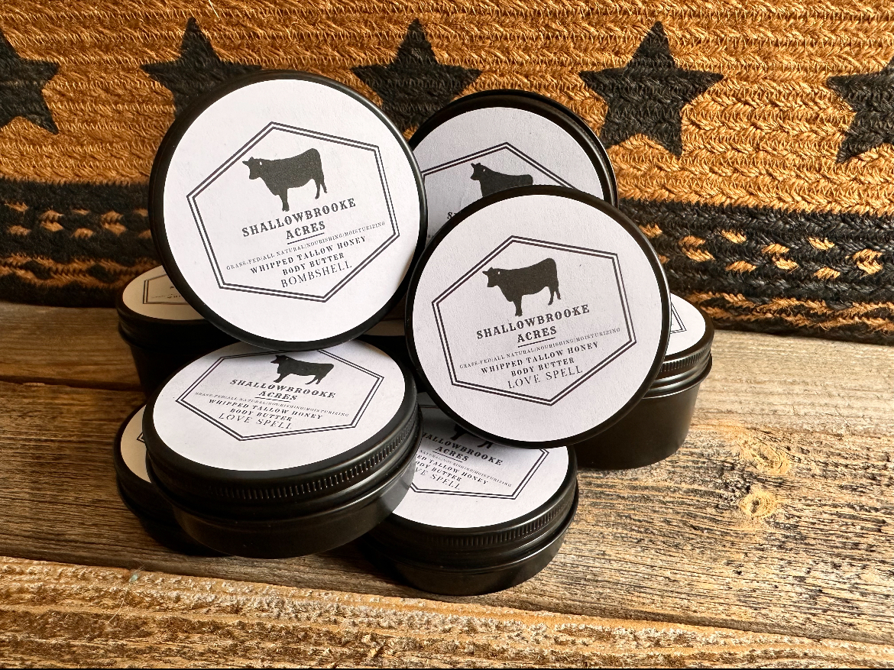
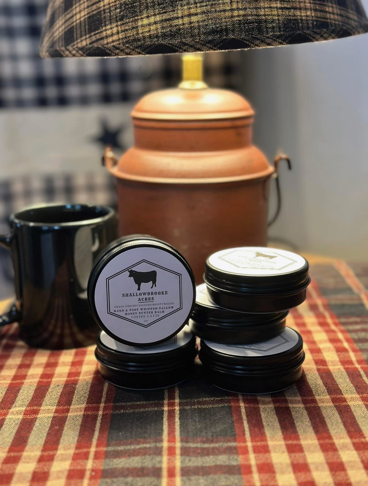
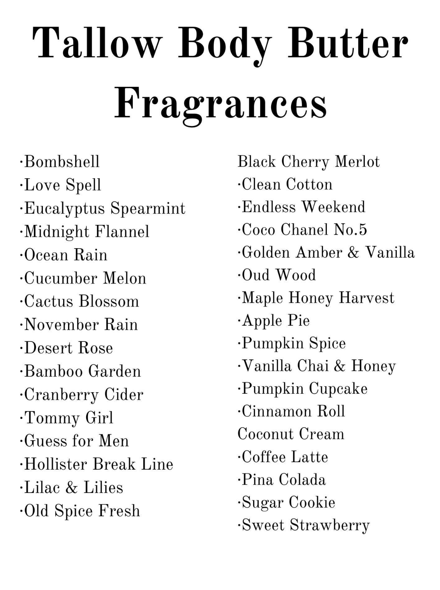
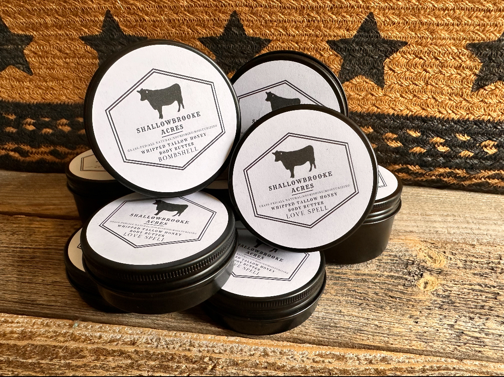
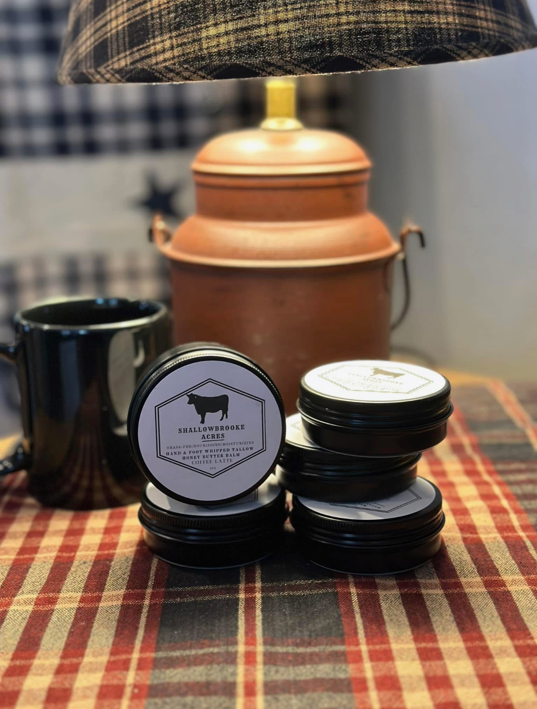
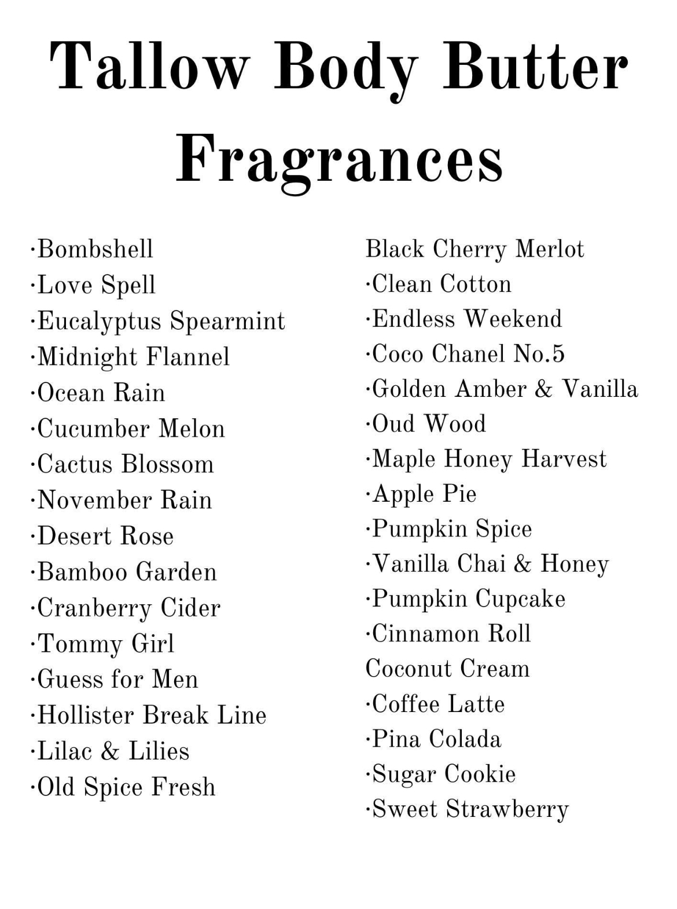